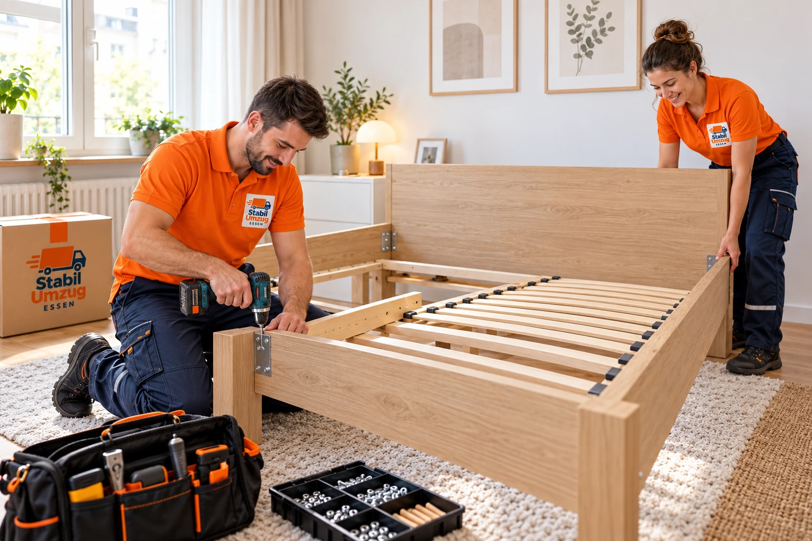

Extra services for your move in Essen
Furniture assembly, packing service, boxes, a no-parking zone or piano transport: with our extra services you put together your move in Essen exactly as you need it.

What we take care of.
Furniture assembly, packing service, boxes, no-parking zones, piano transport and more.
Furniture dismantling and assembly
We take apart wardrobes, beds and other furniture and put them back together in your new home.
Carrying help
Just need strong hands? We carry heavy or bulky items for you.
Loading and unloading help
If you drive a van yourself, we take care of loading and unloading.
Bulky waste disposal by arrangement
By arrangement we take old furniture and bulky waste away and dispose of it in line with local regulations.
Packing and unpacking service
We pack your household goods safely into boxes and unpack them at the destination if you wish.
Moving boxes and packing material
We provide boxes and packing material for an orderly move.
No-parking zone by arrangement
So the removal van can park close to the building, we arrange the no-parking zone as agreed.
Piano transport
We move pianos with the right equipment and enough people.
Done in four steps.
- 01
Request
Tell us via form, phone or WhatsApp which services you need.
- 02
Quote
We clarify the scope and date and send you a personal quote.
- 03
Job day
Our team carries out the agreed services on the agreed day.
- 04
Completion
We go through the result with you and settle any open points on the spot.
Typically included
- Services you can combine freely, on their own or with a move
- Tools for furniture dismantling and assembly
- Boxes and packing material by arrangement
- Applying for the no-parking zone by arrangement
- Bulky waste disposal by arrangement
Briefly answered.
Can I book extra services without a full move?
Yes. Furniture assembly, carrying help or loading and unloading can also be booked on their own.
Do I need a no-parking zone?
If space in front of the building is tight, it makes the move much easier. Read more in our guide to no-parking zones.
Do you transport pianos?
Yes. For a quote we need the type of instrument, the floors and access at both addresses.
How do I get a free quote?
Use our short quote form or call or WhatsApp us on 0163 9688190.
Well prepared.
Furniture assembly
Roughly how long dismantling and assembly take, and how to prepare screws and fittings.
ReadBoxes and packing
Box types and sizes, the heavy-small, light-large rule, a packing list and timing.
ReadNo-parking zone
So the moving van can stop close to the door: where to apply and how early.
ReadAsk for free. Reply within 24 h.
Move, clear-out, household clearance or transport: we send your personal, non-binding quote within 24 hours – via WhatsApp or email.